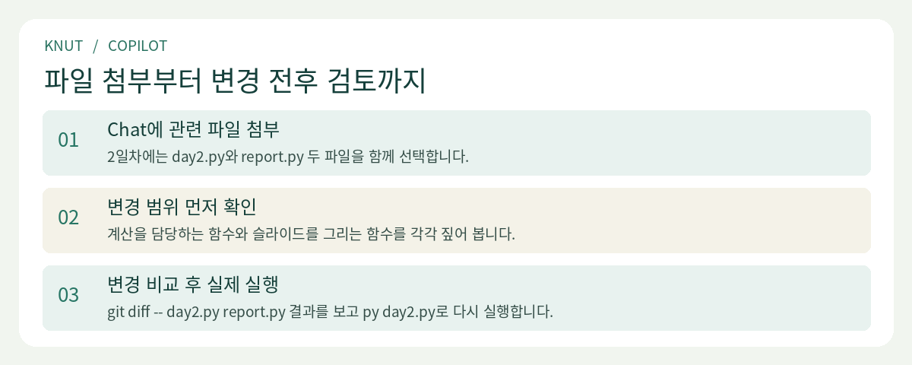

심화 가이드 · 구현과 검증Copilot으로 수정 범위 통제하기

파일 첨부부터 변경 전후 검토까지 · 단계 안내도먼저 파일과 함수를 지정하세요
VS Code에서 프로젝트 폴더를 열고 Chat 입력창에 #을 입력해 파일이나 심볼을 선택하거나 탐색기에서 파일을 채팅창으로 끌어 넣으세요. 첨부된 이름을 확인합니다. 1일차는 day1.py, 2일차는 day2.py와 report.py를 함께 지정합니다. common.py는 결과 저장 방식을 확인할 때 추가하세요.
첨부한 코드에서 엑셀 입력 → 상태 선택 → 결과 저장이 일어나는 위치를 알려줘.
수정하기 전에 바꿀 함수와 그대로 호출할 함수를 표로 제시해 줘.
한 기능씩 구현하세요
day1.py에 기준일 당시 미회신 목록을 계산하는 함수를 추가해 줘.
[내가 확정한 기준일·경과일·정렬 규칙]
이 함수는 원본 데이터프레임을 바꾸지 않고 새 목록을 반환해야 해.
기존 출력에 연결할 위치를 보여줘. 새 라이브러리는 필요 없어.
함수 결과를 먼저 확인한 뒤 다음 요청에서 기존 write_excel 호출에 시트를 연결하세요. 변경을 작게 나누면 잘못된 필터가 들어간 위치를 찾기 쉽습니다.
두 파일을 바꿀 때는 데이터 전달을 먼저 합의하세요
day2.py에서 이미 계산한 사업별·부서별 금액을 확인해 줘.
네 번째 슬라이드에 전달할 열과 단위를 먼저 적고, make_report의 호출부와 정의를 함께 수정해 줘.
집계는 day2.py에서 한 번만 하고 report.py에서는 표시만 해.
증가한 사업이 두 개뿐일 때와 증가 부서가 없을 때도 처리해 줘.
diff에서 확인할 세 곳
- 입력 — 기준일 다음의 회신을 걸러낸 후 마지막 순번을 고르나요?
- 계산 — 증가액 비교 단위는 원인가요? 표시용 ‘만 원’ 변환이 순위 계산에 섞였나요?
- 출력 — 기존 시트와 슬라이드가 남았나요? 터미널에서 아래 명령으로 변경 파일과 함수 주변을 확인하세요.
git status --short
git diff -- day1.py day2.py report.py
VS Code의 소스 제어에서도 파일을 눌러 변경 전후를 비교할 수 있습니다. 제안 중 일부만 필요한 경우 해당 변경 부분을 검토하고 제공되는 유지·되돌리기 동작을 사용하세요.
반례를 만들어 스스로 검수하기
내 변경 사항을 검토해 줘. ① 정확히 7일 ② 기준일 다음 날 회신
③ 두 사업의 증가액 동률 중 지금 코드에서 실패할 수 있는 사례를 찾아줘.
사례마다 입력 2~3행, 예상 결과, 확인할 함수만 적어줘.
AI가 제시한 예상값은 원본 표와 직접 대조하세요. 수정 전후 결과를 나란히 열고, 오류가 나면 전체 재작성을 요청하기 전에 실제 오류 줄과 입력 예시를 전달하세요.
VS Code에서 맥락 추가하기 · 변경 사항 검토하기